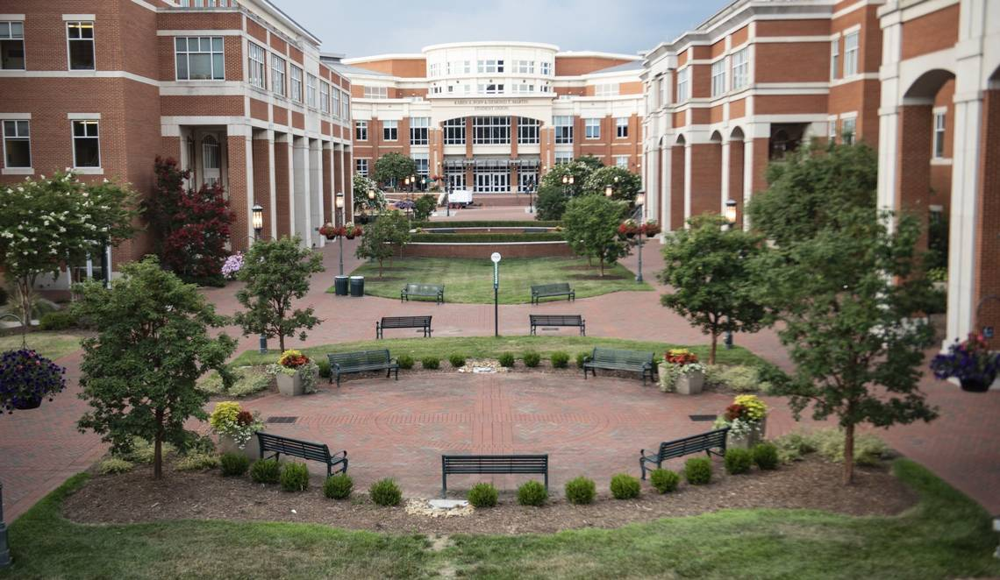

About Me
Born and rasied in Durham, North Carolina. I have two sisters and a niece that I love to death. We moved around a lot when I was a kid so I'm used to constant change. In high school is when things finally settled down and I really started learning who I was. I found out how much I loved math and science. Little did I know how those two subjects would prepare me for my absolute favorite subject, computer science. In my junior year I signed up for AP Comp Sci. At the time I had no idea how that one class would spark a flame that would turn into my burning passion that is programming.
I then went to college and got my degree in computer science. Shortly after completing me degree I landed my first job as an automated firmware test engineer. I had to learn this ancient language known as Visual Basic 6 (VB6 for short). As I was uncovering long forgotten document pertaining to this VB6 I actually started to enjoy it. I prefer python now, but seeing how programming languages have evolved over time was really cool! It also highlighted my ability to quickly learn new technologies and apply them to my job.
Outside of work I try to make my time count how I can. More info in the "Hobbies" section, but the jist is that I absolutely love spending time with people. This past year has been rough due to the pandemic, but I've found ways to connect with those I care about using, you guessed it, technology! Netflix parties, Zoom calls, Wikipedia scavenger hunts, when you're creative enough you can find ways to spend quality time with loved ones at a distance.
Experience
Test Automation Engineer, EASi, Raleigh, NC - March 2019 - July 2020
- Stabilized tests that had a low pass rate in both VB6 and python. Brought first pass yield from 33% to 95% on an older product using legacy code.
- Wrote new feature tests when there were changes to the meter’s firmware.
- Debugged meter hardware to find unintended changes in new meter builds.
- Utilized in-house testing software to run regression tests whenever a new firmware version was released.
- Completed user stories compliant with Agile’s done-criteria definition.
Project Manager, EASi, Raleigh, NC - July 2020 - Current
- Provide leadership to team of 4 senior engineers and 8 junior engineers working in a cross-functional team.
- Responsible for delivery of full test set according to 10-week release cycles.
- Responsible for overseeing conversion of 10-year-old manual test case backlog to automated test cases.
- Plan releases to provide a high level of testing done on a 3-part system. The system is comprised of electrical/water/gas meters, the tools used for configuring the meters and the WebUI used to interface with the meter data.
Technical Skills
- Programming languages: Java, JavaScript, Python, Visual Basic, C, C++.
- Database tools: SQL
- Web Development: HTML5, CSS, XML
- Version control: Git, SVN, Bitbucket
- Agile tools: JIRA, Rally
Non-Technical Skills
- SDLC Systems Delivery Exposure using agile and waterfall methodologies
- Experience with delivering end-to-end development
- Thorough familiarity of release cycles and meeting deadlines on a regular basis
Education
University of North Carolina at Charlotte, December 2018
Bachelor of Science: Computer Science